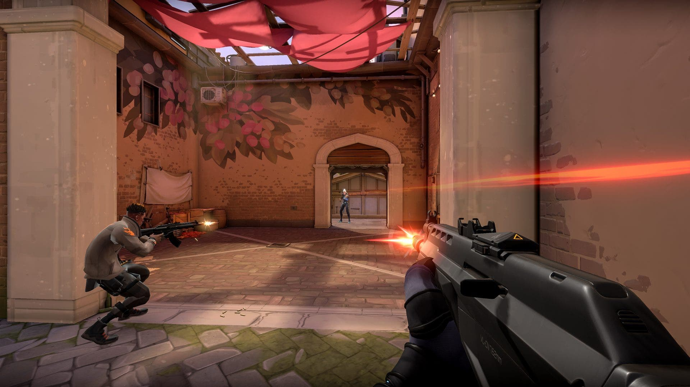

Sinopsis
Hace 10 años, una pequeña compañía llamada Riot Games lanzó al mercado League of Legends Clash of Fates. La sorpresa se extendió rápidamente por la comunidad de jugadores de PC al conocer que ese nuevo MOBA era completamente gratuito. Hace 10 años comenzaba un fenómeno que acabaría revolucionando el panorama competitivo dentro de los videojuegos, hasta erigirse como uno de los pilares de los eSports.
Durante todo este tiempo, muchos han sido los que han bromeado sobre la "S" de Riot GameS. No obstante, el décimo aniversario de la compañía estadounidense ha sentado un antes y un después. League of Legends ya no será el único juego de la compañía. El cumpleaños de Riot nos dejó anuncios sobre Legends of Runeterra, Wild Rift, Teamfight Tactics, un fighting game y un supuesto RPG. Todo ello hizo saltar por los aires a la comunidad de LoL, pero algo más fue anunciado, un juego inesperado y que no entraba en los planes de nadie, un shooter.
VALORANT es el escenario competitivo global que buscáis. Se trata de un shooter táctico 5v5. Vuestra misión es colocar o desactivar la Spike en una serie de rondas en las que solo contaréis con una vida en cada una. La victoria se la lleva el primer equipo que gane 13 rondas. Aparte de las armas y las balas, tendréis a un agente con habilidades letales, adaptables y ágiles que os brindarán oportunidades para demostrar vuestro dominio de las armas. La creatividad es el arma más poderosa.
Historia
Valorant tiene lugar en una versión de la Tierra en un futuro próximo después de un evento conocido como Primera Luz. Este evento abarca todo el mundo, lo que lleva a grandes transformaciones en la vida, la tecnología y la forma en que operan los gobiernos. Sin embargo, personas selectas en todo el mundo comienzan a ganar habilidades derivadas de este evento masivo. Estos individuos dotados se llaman Radiantes.
En respuesta a First Light, oculta funda el una organización oculta funda el Protocolo Valorant, que reúne a Agentes de todo el mundo. Estos agentes consisten en radiantes y otras personas equipadas con tecnología radiante. Debido a las historias de fondo de estos personajes, el equipo de Valorant presenta dinámicas interesantes ya que los individuos no solo se conocen a veces, sino que también provienen de un amplio espectro de antecedentes que van desde el crimen hasta el ejército.
Agentes
Los Agentes están compuestos por individuos conocidos como Radiantes que tienen habilidades hipernaturales o que poseen tecnología Radiant. Cada uno tiene su propia Habilidad de Firma y una Habilidad máxima Utilizada para crear y permitir oportunidades tácticas. Riot Games ha declarado que planeo lanzar Valorant con 12 Agentes actualmente son 13 (Personajes):
- Brimstone
- Cypher
- Jett
- Omen
- Phoenix
- Sage
- Sova
- Viper
- Reyna
- Killjoy
- Skye
- Rayze
Requisitos del sistema
{kind=link}
Información
Fecha de estreno inicial: 2 de junio de 2020
Desarrollador: Riot Games
Modos de juego: Multijugador en línea
Motor: Unreal Engine 4
Distribuidor: Riot Games
Plataforma: Microsoft Windows